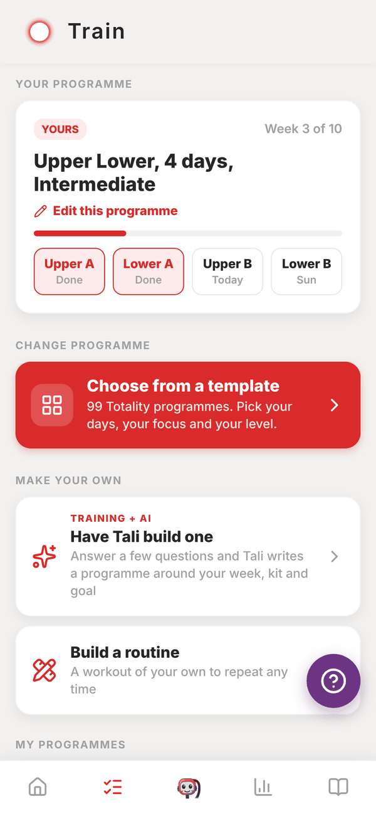
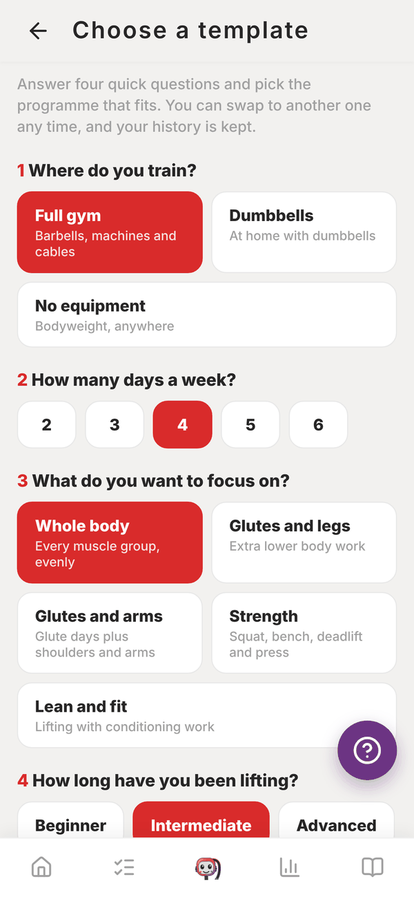
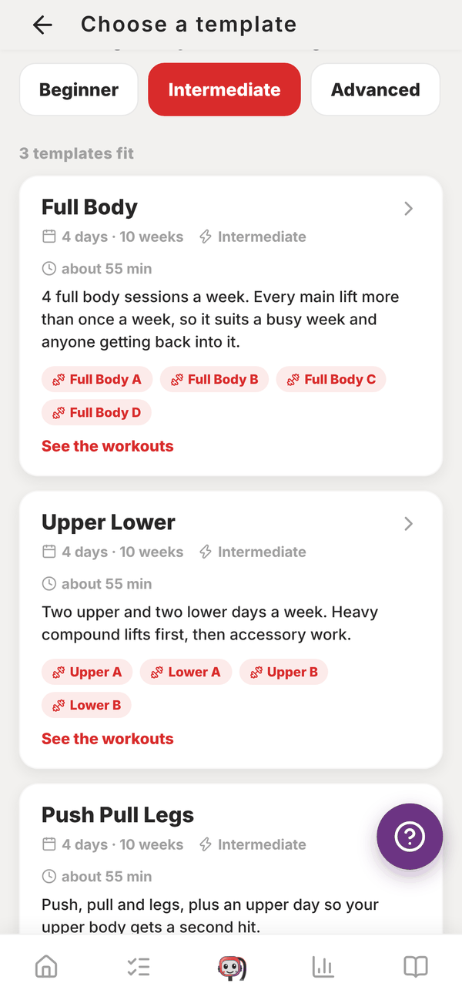
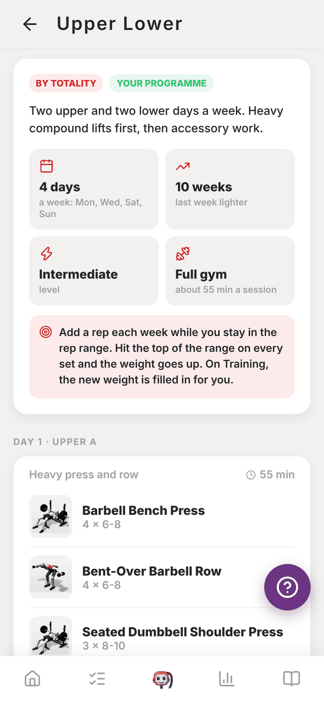

Totality Training guide
Choose a programme
Pick one of 375 Totality programmes in four questions, see every workout first, then start it.
The Train tab shows the programme you are on and every way to change it.

Choose from a template#


- On Train, tap Choose from a template.
- Answer the four questions: Where do you train?, How many days a week?, What do you want to focus on? and How long have you been lifting?. They start on your onboarding answers.
- The list shows every template that fits, with its days, weeks, level, time and workouts.
- Tap a template to see every workout and exercise.
- Tap Start this programme (or Switch to this programme if you are on one already).
Where do you train? has five answers: Full gym, Dumbbells, No equipment, Bars and rings (a pull-up bar, dip bars or rings) and Kettlebells.
What do you want to focus on? has everyday training and sports and styles. Only the ones with a programme for your kit and days are shown.
| Everyday training | Sports and styles |
|---|---|
| Whole body | Powerlifting, Street Lifting, Olympic Lifting |
| Glutes and legs | Classic Bodybuilding, New School Bodybuilding, Powerbuilding |
| Glutes and arms | Strongman, Circus Strongman |
| Strength | Gymnastics, Calisthenics |
| Lean and fit | Kettlebell, Athletic Performance, Hybrid (lifting and running) |
Every style comes at 2 to 6 days a week and at Beginner, Intermediate and Advanced. The level changes the exercises too, not just the sets and reps. For example, Strongman beginners use sandbags, farmer's carries and the trap bar, and the log, yoke and stones come in at Intermediate.
Classic Bodybuilding trains one or two areas a day. New School Bodybuilding trains every muscle at least twice a week.
With Dumbbells you can pick Home Dumbbell, Dumbbell Upper Lower, Dumbbell Push Pull Legs, Dumbbell Glutes and Legs or Dumbbell Burn. With No equipment you can pick No Equipment, Bodyweight Upper Lower or Bodyweight Burn. Not every one comes at every number of days.
What a programme looks like#

Each programme shows its days a week and which days they land on, how many weeks it runs, the level and the kit, and how it progresses. Powerlifting, for example, adds 2.5 kg to the main lifts when every set is done. Every programme ends with a lighter week. Below are the workouts, day by day, with sets and reps for each exercise.
The second half of a programme#
Programmes change halfway through so you aren't doing the same exercises for every week.
- The first lifts each day get heavier for fewer reps. On no equipment programmes they move to a harder version instead, like Archer Push-Ups.
- Most other exercises swap for a close variation that works the same muscles with the same kit.
On a programme's page, tap Weeks 1 to 5 or Weeks 6 to 10 (the weeks depend on the programme) to see each half.
Set types#
Some exercises on Intermediate and Advanced programmes use a set type: a drop set, myo reps, rest-pause or AMRAP (as many reps as you can in the time). They're used on the last exercises of a workout, where they help. The workout screen shows a badge on these exercises and how to do each one.
On Free, Strength Foundations is free to start. The others show a lock and need Training.
Questions#
What happens to my history if I switch?
Nothing. Your workouts and personal bests are kept. The new programme starts from week 1.
Can I change a template's exercises?
Yes. Once you start it, it is saved under My programmes, and every workout is yours to edit. See My programmes and editing.